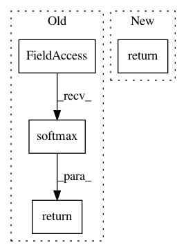

4c3495896e77a5a4ebfeff717feb3d04681d27e7,keras/activations.py,,time_distributed_softmax,#Any#,9
Before Change
def time_distributed_softmax(x):
xshape = x.shape
X = x.reshape((xshape[0] * xshape[1], xshape[2]))
return T.nnet.softmax(X).reshape(xshape)
def softplus(x):
return T.nnet.softplus(x)
After Change
def time_distributed_softmax(x):
import warnings
warnings.warn("time_distributed_softmax is deprecated. Just use softmax!", DeprecationWarning)
return softmax(x)
def softplus(x):
return T.nnet.softplus(x)
In pattern: SUPERPATTERN
Frequency: 3
Non-data size: 4
Instances
Project Name: keras-team/keras
Commit Name: 4c3495896e77a5a4ebfeff717feb3d04681d27e7
Time: 2015-06-23
Author: xavier@whirlscape.com
File Name: keras/activations.py
Class Name:
Method Name: time_distributed_softmax
Project Name: keras-team/keras
Commit Name: 5ed913da1108b63c69d48d30b395ae35e576dc9f
Time: 2015-11-15
Author: francois.chollet@gmail.com
File Name: keras/activations.py
Class Name:
Method Name: softmax
Project Name: tryolabs/luminoth
Commit Name: 309a2987c28df9cd82da00a47147e6492414e6aa
Time: 2017-06-06
Author: javirey@gmail.com
File Name: frcnn/rpn.py
Class Name: RPN
Method Name: _build